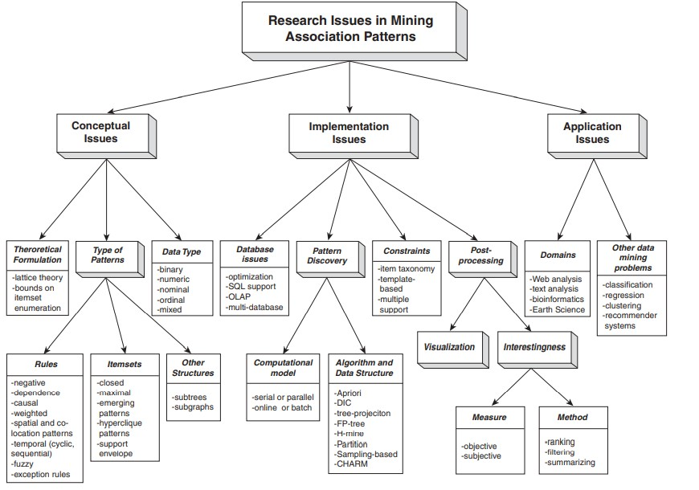

Unsupervised Data Mining
Contents
import pandas as pd
from scipy.cluster.hierarchy import dendrogram, linkage, fcluster
from sklearn.cluster import KMeans
import matplotlib.pylab as plt
import seaborn as sns
import sys
sys.path.append('..')
from src.data import load_data,standardize
import pprint
plt.style.use('fivethirtyeight')
pd.set_option('display.precision',4)
Unsupervised Data Mining#
Unsupervised methods in data mining use machine learning algorithms to analyze and cluster unlabeled datasets (that is data without known target values). These algorithms discover hidden patterns or data groupings without the need for human intervention. The ability to discover similarities and differences in information make it the ideal solution for exploratory data analysis, cross-selling strategies, customer segmentation, and image recognition. Other unsupervised techniques include affinity analysis, which can be used to develop recommendation engines, and principal component analysis, used to reduce a number of predictors into the most valuable components.
And while unsupervised methods are useful by themselves, they can also provide interesting insights and add new factors that can be leveraged in supervised methods.
Clustering#
Clustering is a data mining technique which groups unlabeled data based on their similarities or differences. Clustering algorithms are used to process raw, unclassified data objects into groups represented by structures or patterns in the information. Clustering algorithms can be categorized into a few types, specifically exclusive, overlapping, hierarchical, and probabilistic.
Exclusive and Overlapping Clustering#
Exclusive clustering is a form of grouping that stipulates a data point can exist only in one cluster. This can also be referred to as “hard” clustering. The K-means clustering algorithm is an example of exclusive clustering.
K-means clustering is a common example of an exclusive clustering method where data points are assigned into K groups, where K represents the number of clusters based on the distance from each group’s centroid. The data points closest to a given centroid will be clustered under the same category. A larger K value will be indicative of smaller groupings with more granularity whereas a smaller K value will have larger groupings and less granularity. K-means clustering is commonly used in market segmentation, document clustering, image segmentation, and image compression.
Overlapping clusters differs from exclusive clustering in that it allows data points to belong to multiple clusters with separate degrees of membership. “Soft” or fuzzy k-means clustering is an example of overlapping clustering.
Hierachical Clustering#
Hierarchical Clustering creates clusters in a hierarchical tree-like structure (also called a Dendrogram). Meaning, a subset of similar data is created in a tree-like structure in which the root node corresponds to entire data, and branches are created from the root node to form several clusters.
{kind=link}
K-Means Clustering Example#
One of the most common clustering algorithms is a K-means clustering. k determines the number of clusters which provide centroids” around which the observations are arranged. Here are the steps in the learning
Intialization - initialize
krandom points to serve as the center (or centroid) of the clusters.Cluster Assignment - for each observation, assign the record to the centroid to which it is closest.
Centroid Movement - once all the observations have been assigned, calculate the ‘center’ of each group. This becomes the new centroid for the cluster.
Repeat Steps 2-3 until the centroids are not moving.
Example Public Utilities#
In our dataset we have a collection of public utilities in the United States. We believe it would be helpful to study the impact of deregulation on utilities - but in order to do so we need to develop a cost-basis for a typical utility in each category. Rather than build models for each utility individually we have been asked to find some similar utilities so that we can create more generalized model.
# Start by loading up our data
utils_df = load_data('Utilities', index_col='Company')
utils_df.head()
plt.figure(figsize=(20,10))
for i in range(utils_df.shape[0]):
plt.text(x=utils_df.Sales[i]-200,
y=utils_df.Fuel_Cost[i]-0.05,
s=utils_df.index[i],
fontdict=dict(color='black',size=8))
sns.scatterplot(data=utils_df,x='Sales',y='Fuel_Cost')
We can see just from looking at the data here, that we have numbers that are all over the place in terms of scale. Sales are in the thousands, while costs are in the single digits and the other values are somewhere in-between. This is going to present a problem, the distance from a ‘centroid’ is going to be significantly impacted by sales while the other variables don’t move it much at all. Our first task then is to normalize the values.
Here’s why, if we calculate the distance using Euclidean distance this is measured as \( distance = \sqrt{(x_{i1} - x_{j1})^2+(x_{i2} - x_{j2})^2 + .. (x_{ip} - x_{jp})^2} \)$
# Standardize all the columns into a new dataframe
utils_df_std = standardize(utils_df, ['Fixed_charge', 'RoR', 'Cost', 'Load_factor','Demand_growth', 'Sales', 'Nuclear', 'Fuel_Cost'], drop_old=True )
fig, axs = plt.subplots(ncols=2, figsize=(20,10))
axs[0].set_title('Original')
axs[1].set_title('Scaled')
for i in range(utils_df.shape[0]):
axs[0].text(x=utils_df.Sales[i]-200,
y=utils_df.Fuel_Cost[i]-0.05,
s=utils_df.index[i],
fontdict=dict(color='black',size=8))
# axs[1].text(x=utils_df.Sales_STD[i],
# y=utils_df_std.Fuel_Cost_STD[i],
# s=utils_df_std.index[i],
# fontdict=dict(color='black',size=8))
sns.scatterplot(data=utils_df,x='Sales',y='Fuel_Cost',ax=axs[0])
sns.scatterplot(data=utils_df_std,x='Sales_STD',y='Fuel_Cost_STD',ax=axs[1])
num_clusters = 6
kmeans = KMeans(n_clusters=num_clusters, random_state=0).fit(utils_df_std)
# Determine membership
members = pd.Series(kmeans.labels_, index=utils_df_std.index)
for k, v in members.groupby(members):
print (f'{k} : '+", ".join(v.index))
## NOTE: Here we are geting different clusters so that we visually see the clusters in just 2 dimensions
# Same thing, except this time, we are only considering Sales and Fuel_Cost
kmeans = KMeans(n_clusters=num_clusters, random_state=0).fit(utils_df_std[['Sales_STD','Fuel_Cost_STD']])
# Find the centroids
centroids = kmeans.cluster_centers_
cen_x = [_[0] for _ in centroids]
cen_y = [_[1] for _ in centroids]
# Assign the clusters
utils_df_std['cluster'] = kmeans.labels_
centroid_df = pd.DataFrame({'cen_x':cen_x,'cen_y':cen_y})
utils_cluster_df = utils_df_std.join(centroid_df, on='cluster').reset_index()
for k, v in utils_df_std.groupby('cluster'):
print (f'{k} : '+", ".join(v.index))
# Just a quick check on the data for the cluster
utils_cluster_df
# Now we need to set the associated centroid for each row
plt.figure(figsize=(20,10))
_colors=['red', 'blue', 'purple', 'green', 'magenta', 'hotpink']
ax = sns.scatterplot(data=utils_cluster_df,
x='Sales_STD',
y='Fuel_Cost_STD',
hue='cluster',
palette=_colors,
facecolors='none',
legend=False)
ax = sns.scatterplot(data= centroid_df,
x="cen_x",
y="cen_y",
hue=range(num_clusters),
palette=_colors,
marker="*",
s=400,
legend=False, ax=ax)
for idx, val in utils_cluster_df.iterrows():
plt.text(x=val.Sales_STD,
y=val.Fuel_Cost_STD-0.05,
s=val.Company,
fontdict=dict(color='black',size=8))
x = [val.Sales_STD, val.cen_x]
y = [val.Fuel_Cost_STD, val.cen_y]
plt.plot(x,y,c=_colors[val.cluster], alpha=0.2)
plt.show();
Association Rules#
An association rule is a rule-based method for finding relationships between variables in a given dataset. These methods are frequently used for market basket analysis, allowing companies to better understand relationships between different products. Understanding consumption habits of customers enables businesses to develop better cross-selling strategies and recommendation engines. Examples of this can be seen in Amazon’s “Customers Who Bought This Item Also Bought” or Spotify’s “Discover Weekly” playlist. While there are a few different algorithms used to generate association rules, such as Apriori, Eclat, and FP-Growth, the Apriori algorithm is most widely used.
Apriori algorithms#
Apriori algorithms have been popularized through market basket analyses, leading to different recommendation engines for music platforms and online retailers. They are used within transactional datasets to identify frequent itemsets, or collections of items, to identify the likelihood of consuming a product given the consumption of another product. For example, if I play Black Sabbath’s radio on Spotify, starting with their song “Orchid”, one of the other songs on this channel will likely be a Led Zeppelin song, such as “Over the Hills and Far Away.” This is based on my prior listening habits as well as the ones of others. Apriori algorithms use a hash tree to count itemsets, navigating through the dataset in a breadth-first manner.
Selling Phone Faceplates#
Suppose we have a store that sells phone face plates. These faceplates come in six different colors and the store wants to offer a two-for-one promotion. The manager would like to know which two colors are sold together most often.
We start by looking at all the purchases, then we can count the number of faceplates of each color that has been bought. From there we can find all the combinations of two different colors and then three’s and four’s and so on. This can get complex - especially if we have lots of different products. Instead what we want is the most frequently purchased sets. Determining what qualifies as a frequent set is called support. Support is calculated simply by the occurences of the outcome divided by the total outcomes \(support=\frac{p}{n}\) where p is the number of occurences and n is the total number of transactions
Association rules include two parts, an antecedent (if) and a consequent (then) that is the if-then association that occurs more frequently in the dataset. For instance, {Bread}=>{Milk}, says If a person buy’s bread, then they may also buy milk. Or {Bread, Eggs}=>{Milk}: if a person buys both bread and eggs then they may buy milk.
By determining the 1 item set and an acceptable level of support we can decide if it should be considered in a two-item set and so forth.
# Calculating the one-item sets
from mlxtend.frequent_patterns import apriori
from mlxtend.frequent_patterns import association_rules
# Load up the dataset
fp_df = load_data('Faceplate', index_col='Transaction')
fp_df
# Calculating support for single item sets
[f'{color}: {sum(fp_df[color])/len(fp_df)}' for color in fp_df.columns]
Support and Confidence#
In addition to support, we can calculate the degree of certainty about the rules we have created. Confidence measures the co-occurane of the antecendent and consequent itemsets in the data to the occurence of the antecent itemset on it’s own. $\( Confidence=\frac{n_{ac}}{n_a} \)$
where \(n_{ac}\) is the number of items with the antecendent and the consequence and \(n_a\) is the number of items with the antecedent itemset
Therefore looking at the example above, if we want to say what is the confidence of {Red}=>{Blue} $\( \frac{n_{(Red,Blue)}}{(n_{red})}=\frac{4}{6}=0.75 \)$
Fortunately, we can also use the mlxtend library to do some of the heavy lifting for us. The next example shows the all the rules which have at least a support of 0.2.
# Create the most frequent sets
itemsets = apriori(fp_df, min_support=0.2, use_colnames=True)
itemsets
Lift#
One of the challenges with just looking at confidence is that either the antecedent rules or the consequent rules may already have a high support. In other words, what if everyone buys a red phone cover, then it’s not very helpful to say that if a customer buys a red faceplate that they would also buy a green one. So it’s useful to compare to a benchmark, so that we can determine that the occurence of the consequence is truly independent of the occurence of the antencedent. We can get the benchmark confidence of the consequence by using the formula $\( \frac{n_{consequent}}{n} \)$ that is the probabilty of seeing the consequent in the database.
We can then calculate the lift ratio by dividing the confidence by the benchmark confidence. A lift ratio value of greater than 1.0 suggests that there is some usefulness to the rule.
# And now let's take a look at the rules
rules = association_rules(itemsets, metric='confidence', min_threshold=0.5)
rules.sort_values(by=['lift'], ascending=False).head(6)
pprint.pp(rules.sort_values(by=['lift'], ascending=False)
.drop(columns=['antecedent support', 'consequent support', 'conviction'])
.head(6))
Interpretting the rules#
In order to interpret these rules, {orange}=>{white} - we would say “If orange is purchased, then with confidence of 100% white will also be purchased. This rule has a lift ratio of 1.43.
Next Steps#
In this notebook we’ve focused on two unsupervised learning techniques. There are many reasons and variations for these techniques. For instance, collaborative filtering is a technique which uses many of the same techniques as association but rather than looking at all the transactions, the focus is on a single customer. Other unsupervised methods are involved in text analysis and image recognition.
Resources#
There are many, many different avenues in which to explore association patterns. The following diagram it taken from the excellent textbook Introduction to Data Mining.
{kind=link}
Other datasets#
Charles Book Clubis another great dataset to try with apriori rules to see how different genres of books sell